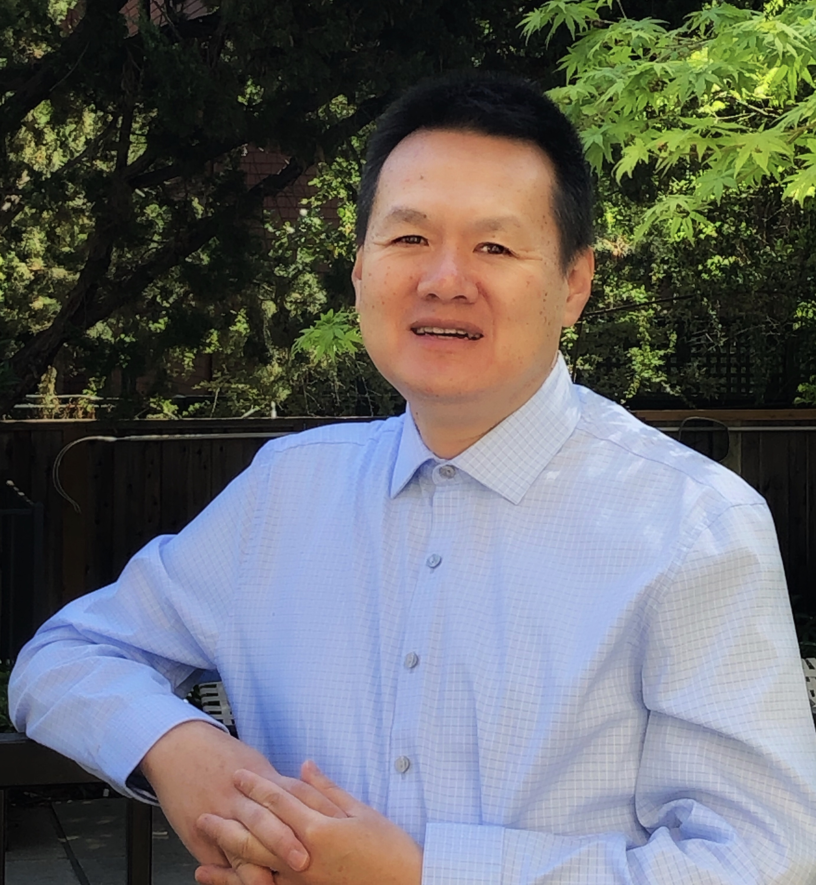

Xin ChenMy research focuses on computer vision, machine learning, efficient AI, LLMs and ML systems. Guided by the principles of No Free Lunch Theorem and Scaling Laws. I approach each project with comprehensive and careful consideration
of computatinal budget, dataset quality and deep learning algorithms. I then design models and training procedures to optimize performance. In short, my philosophy is to push the boundaries of these components to deliver high-performing AI solutions for diverse applications. Email / CV / Google Scholar / Github |
 |
(*Equal Contribution, †Corresponding Author)
Defensive Unlearning with Adversarial Training for Robust Concept Erasure in Diffusion Models
Yimeng Zhang, Xin Chen, Jinghan Jia, Yihua Zhang, Chongyu Fan, Jiancheng Liu, Mingyi Hong, Ke Ding and Sijia Liu
The 38th Annual Conference on Neural Information Processing Systems (NIPS), 2024
To Generate or Not? Safety-Driven Unlearned Diffusion Models Are Still Easy To Generate Unsafe Images... For Now
Yimeng Zhang*, Jinghan Jia*, Xin Chen, Aochuan Chen, Yihua Zhang, Jiancheng Liu, Ke Ding, Sijia Liu
European Conference on Computer Vision (ECCV), 2024
Learning to Maximize Mutual Information for Chain-of-Thought Distillation
Xin Chen, Hanxian Huang, Yanjun Gao, Yi Wang, Jishen Zhao, Ke Ding
The 62nd Annual Meeting of the Association for Computational Linguistics (ACL) Findings, 2024
Fasor: A Fast Tensor Program Optimization Framework for Efficient DNN Deployment
Hanxian Huang, Xin Chen, Jishen Zhao
Proceedings of the 38th ACM International Conference on Supercomputing (ICS), 2024
Region-aware Knowledge Distillation for Efficient Image-to-Image Translation
Linfeng Zhang, Xin Chen, Runpei Dong, Kaisheng Ma
British Machine Vision Conference (BMVC), 2023
Influence of Data Distribution on Federated Learning Performance in Tumor Segmentation
Guibo Luo,Tianyu Liu, Jinghui Lu,Xin Chen, Lequan Yu, Jian Wu, Danny Z. Chen, Wenli Cai
Radiology: Artificial Intelligence, April 2023
Text-Visual Prompting for Efficient 2D Temporal Video Grounding
Yimeng Zhang, Xin Chen, Jinghan Jia, Sijia Liu, Ke Ding
Proceedings of the IEEE/CVF Conference on Computer Vision and Pattern Recognition (CVPR), 2023
Contrastive Deep Supervision
Linfeng Zhang, Xin Chen, Junbo Zhang, Runpei Dong, Kaisheng Ma
European Conference on Computer Vision (ECCV), 2022 (Oral, 2.7% acceptance ratio)
Pruning-as-Search: Efficient Neural Architecture Search via Automatic Channel Pruning and Structural Reparameterization
Yanyu Li, Pu Zhao, Geng Yuan, Xue Lin, Yanzhi Wang, Xin Chen†
31st International Joint Conference on Artificial Intelligence and the 25th European Conference on Artificial Intelligence (IJCAI-ECAI), 2022
Wavelet Knowledge Distillation: Towards Efficient Image-to-Image Translation
Linfeng Zhang, Xin Chen, Xiaobing Tu, Pengfei Wan, Ning Xu, Kaisheng Ma
Proceedings of the IEEE/CVF Conference on Computer Vision and Pattern Recognition (CVPR), 2022
Attention Distillation for Learning Video Representations
Miao Liu, Xin Chen, Yun Zhang, Yin Li, James M Rehg
British Machine Vision Conference (BMVC), 2020 (Oral, 5% acceptance ratio)
Beyond saliency: understanding convolutional neural networks from saliency prediction on layer-wise relevance propagation
Heyi Liu, Yuke Tian, Klaus Mueller, Xin Chen†
Image and Vision Computing, Volume 83, March, 2019
Fully-coupled two-stream spatiotemporal networks for extremely low resolution action recognition
Mingze Xu, Aidean Sharghi, Xin Chen†, David J Crandall
IEEE Winter Conference on Applications of Computer Vision (WACV), 2018
Motion Saliency Based Automatic Delineation of Glottis Contour in High-speed Digital Images
Xin Chen, Emma Marriott, Yuling Yan
IEEE Conference on Industrial Electronics and Applications ((ICIEA)), 2017
Parallel nonparametric binarization for degraded document images
Xin Chen, Liang Lin, Yuefang Gao
Neurocomputing, Volume 189, 2016
Large-scale support vector machine classification with redundant data reduction Xiang-Jun Shen, Lei Mu, Zhen Li, Hao-Xiang Wu, Jian-Ping Gou, Xin Chen Neurocomputing, Volume 172, 2016
CUDA-accelerated fast Sauvola’s method on Kepler architecture
Xin Chen, Yuefang Gao, Zhonghong Huang
Multimedia Tools and Applications, Volume 74, 2015
Saliency Mapping Enhanced by Structure Tensor
Zhiyong He, Xin Chen, Lining Sun
Computational Intelligence and Neuroscience, 2015
Automatic tracing of vocal-fold motion from high-speed digital images
Yuling Yan, Xin Chen, Diane Bless
IEEE Transactions on Biomedical Engineering, Volume 53, Issue 7, 2006
A segmentation scheme based on Rayleigh distribution model for extracting glottal waveform from high-speed laryngeal images
Xin Chen, Diane Bless, Yuling Yan
IEEE Engineering in Medicine and Biology 27th Annual Conference (EMBS), 2005
Biomedical image analysis in high-speed laryngeal imaging of voice production
Yuling Yan, Diane Bless, Xin Chen
IEEE Engineering in Medicine and Biology 27th Annual Conference (EMBS), 2005